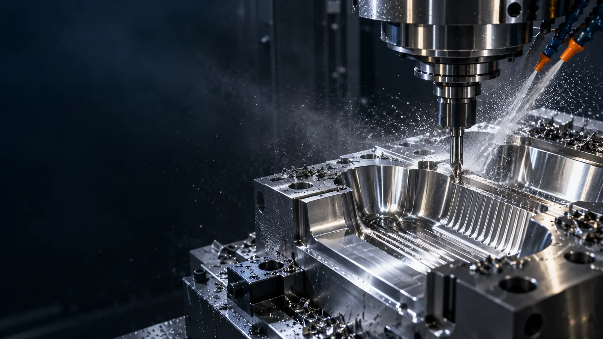
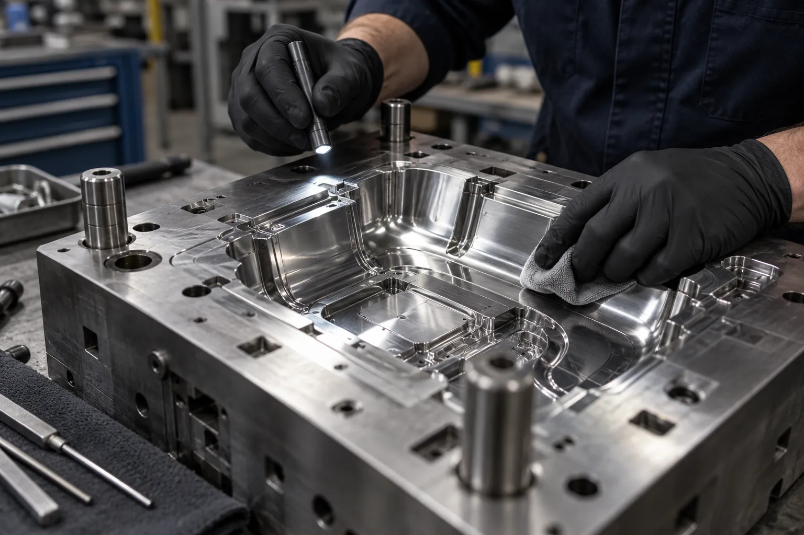
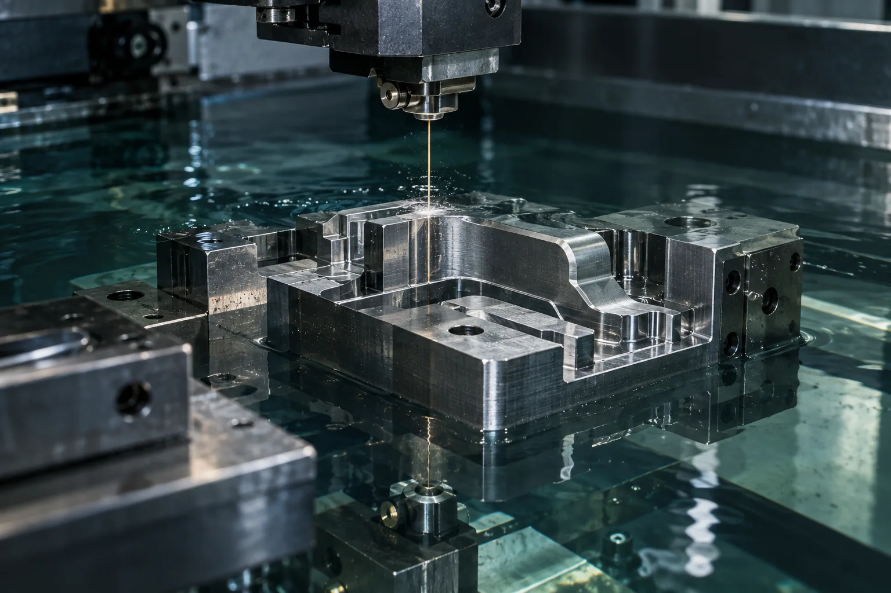

Qolip ta’miri
Plastmassa qoliplarini diagnostika qilish, yeyilgan joylarni tiklash, sovitish kanallari va ejektor tizimini ko‘rib chiqish.

Plastmassa qoliplari va shtamp detallarini ta’mirlash, tayyorlash hamda CNC va EDM orqali ishlov berish bo‘yicha muhandislik xizmati.
Nosozlikni aniqlashdan detalni tiklash yoki yangisini tayyorlashgacha kerakli jarayonlarni bir joyda birlashtiramiz.
Plastmassa qoliplarini diagnostika qilish, yeyilgan joylarni tiklash, sovitish kanallari va ejektor tizimini ko‘rib chiqish.
Chizma yoki namuna asosida qolip, shtamp va boshqa aniq mexanik detallarni tayyorlash.
Wire cut, die sinking va EDM drilling yordamida murakkab kontur, kovak va mayda teshiklar hosil qilish.
Qolip yuzasini polishing qilish va yassi silliqlash orqali yakuniy ishlov berish.
Qolipning zararlangan yoki yeyilgan qismlarini precision welding orqali tiklash.
Insert, puanson, ejektor va boshqa komponentlarni loyiha talablariga muvofiq tayyorlash.

Illyustrativ tasvirJarayonni detal geometriyasi, material va talab etilgan aniqlikka qarab tanlaymiz. Narx hamda ishlab chiqarish muddati texnik ma’lumotlar ko‘rib chiqilgach kelishiladi.
Har bir buyurtma chizma, material va texnik talablar asosida alohida baholanadi.
Chizma, fotosurat yoki namunani va muammo tavsifini yuboring.
Material, o‘lcham va texnologiyani ko‘rib chiqib, narx hamda muddatni kelishamiz.
Kelishilgan chizma yoki texnik topshiriq bo‘yicha ishlov beramiz.
Tayyor detalning kelishilgan o‘lchamlari va holatini tekshirib topshiramiz.
Aniq ishlov va sirtni yakunlash talab qiladigan vazifalarga e’tibor qaratamiz.

Tasvirlar xizmat jarayonlarini ifodalaydi; kompaniyaning bajarilgan ishlaridan olingan foto hisobot emas.
Detal turi, material, o‘lcham, miqdor va kerakli muddatni yozing. Muhandislik bahosi va tijorat taklifi uchun siz bilan bog‘lanamiz.